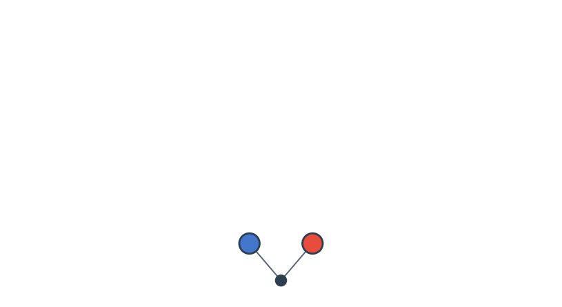
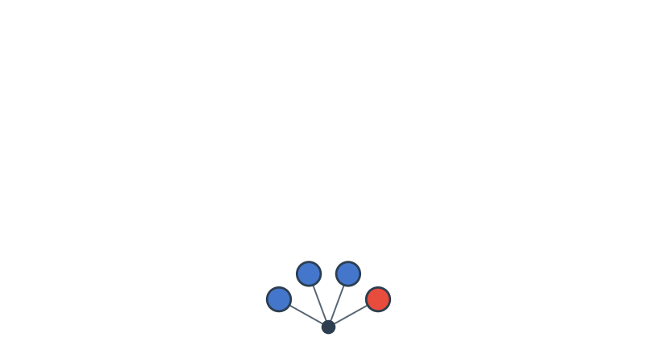
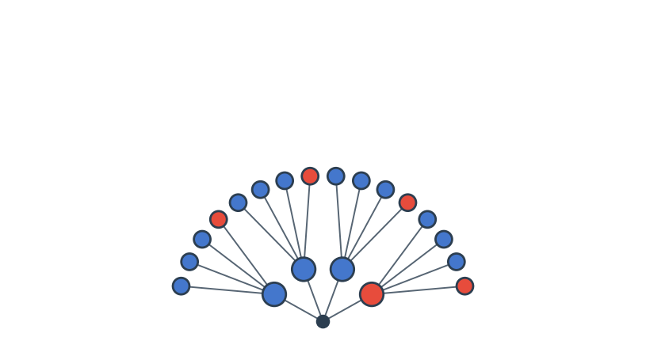
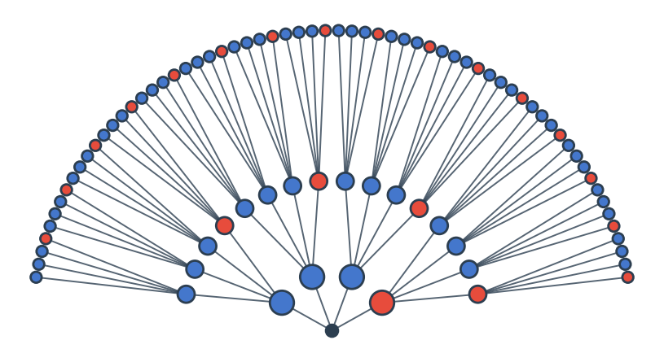
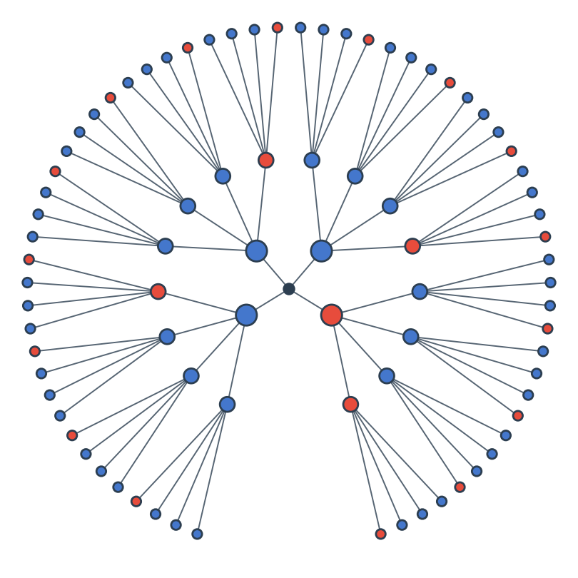
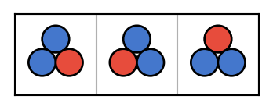
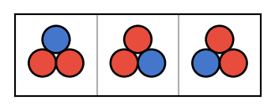

Lecture 1: Probability Theory
Math for Data Science · 2026
2026-09-01
Math for Datascience Fall 2026
🌐 https://hertie-maths-data-science-f2026.github.io
- GitHub (lecture materials, code, assignments, etc.)
- Moodle (everything else)
Me
🙋 I am Jan Gieseler /ˈjan ˈɡiːzələr/
✉️ j.gieseler@hertie-school.org
💼 physicist | data scientist / team manager / lead dev @ IAV GmbH

The labs
- Attendance is also mandatory
- Opportunity to ask more in-depth questions; we apply and extend concepts from lecture, often with code
- Use this as an opportunity for self practice.

self practice
This is where the learning happens!
We take data from the world…
and we produce:
- Descriptive information - summary statistics, plots, maps
- Predictions about the future or new contexts
- Who will win the next election? Will the economy grow next year?
- Evidence for causal theories in social science
- Are democracies less likely to go to war?
- Policy/ Decision recommendations - taxes, regulations, interventions
Purpose of This Course
The mathematical foundations of data science:
| Topic | Why it matters |
|---|---|
| Probability theory | Theory of the data-generating process |
| Calculus | How things change; optimization |
| Linear algebra | How to manipulate data as vectors/matrices |
| Statistical learning | Fitting models to data |
Probability Theory
Theory about the process by which our data is generated.
- Every dataset has signal (systematic patterns) and noise (stochastic variation)
- Two compatible views of randomness:
- Truly random - quantum fluctuations, “coin flips”
- Deterministic but unobserved - we don’t model every cause
- End goal: extract the signal, quantify the noise
Calculus
Mathematics of functions and how things change.
- How does \(x\) change with \(y\)? - description, prediction, theory
- What model best fits the data? - optimization is calculus
- Needed for probability theory with continuous random variables
- Functions map events to probabilities via integrals
Linear Algebra
How to manipulate vectors and matrices - which is how you manipulate data.
\[\begin{pmatrix} a_{1,1} & \cdots & a_{1,n} \\ \vdots & \ddots & \vdots \\ a_{m,1} & \cdots & a_{m,n} \end{pmatrix}\]
Each row is an observation. Each column is a feature.
Statistical Learning
Putting it all together:
- Combine theory about the data-generating process (probability)
- with tools to manipulate functions (calculus) and datasets (linear algebra),
- to fit models to data
- in order to describe, predict, and theorize about the world
The 4 sided dice with two colors
A four sided dice with 3 blue sides and one red.
4 sided dice: \(S = \{B_1, B_2, B_3, W\}\)
sample space: 4 outcomes (four sides of the die)

4 sided dice - two tosses
sample space: 16 outcomes

4 sided dice - three tosses
sample space: 64 outcomes


Multiplication Rule
If sub-experiment A has \(a\) outcomes and sub-experiment B has \(b\) outcomes independently, the compound experiment has \(ab\) outcomes.
Sampling with Replacement
Note
By the multiplication rule: \(\mathbf{n^k}\) possible outcomes.
Example 1: 3 rolls of a 4 sided die → \(4^3 = 64\) outcomes.
Example 2: Urn with \(n\) balls labeled \(1, \ldots, n\). Pick \(k\) balls, replacing each before the next draw.
Sampling without Replacement
Note
By the multiplication rule: \(\mathbf{n \cdot (n-1) \cdots (n-k+1)}\) outcomes (or 0 if \(k > n\)).
Example: Award gold / silver / bronze to 32 teams:
\[32 \cdot 31 \cdot 30 = 29760\]


Events
Let \(S\) be the sample space - the set of all possible outcomes of an experiment.
Example: Three tosses of 4-sided die
4 events - order does not matter for the definition of the event
3 Blue2 Blue & 1 Red1 Blue & 2 Red3 Red

Events
An event \(A \subseteq S\) is any subset of the sample space.
| Operation | Symbol | Meaning |
|---|---|---|
| Union | \(A \cup B\) | \(A\) OR \(B\) occurs |
| Intersection | \(A \cap B\) | Both \(A\) AND \(B\) |
| Complement | \(A^c\) | \(A\) does NOT occur |
Boolean algebra
These are the same logical operators such as conjunction (and), disjunction (or), and negation (not) known from boolean algebra.
Try it on pebble world

De Morgan’s Laws
\[ (A \cup B)^c = A^c \cap B^c \qquad (A \cap B)^c = A^c \cup B^c \]
In plain language:
- NOT (A OR B) = NOT A AND NOT B
- NOT (A AND B) = NOT A OR NOT B
Try it on pebble world
Verify both laws: identify which pebbles satisfy each side. Do the sets match?

Lets look at some other examples

Different order of tosses also gives blue \(c_{\textrm{brb}}=3\times 1\times 3=3^2\times 1^1 = 9=c_{\textrm{bbr}}\)

Three blue \(c_{\textrm{bbr}}=3\times 3\times 3=3^3\times 1^0 = 27\)
Three red \(c_{\textrm{rrr}}=1\times 1\times 1=3^0\times 1^3 = 1\)
Combinations of peebles with the same number of blue
Now we consider how many ways are there to arrange the triangle such that there are two blue corners.
We have \(b\) blue that we want to position in the \(t\) corners (tosses) of the triangle but we do not care about which corner gets to be blue.
That is why there are \(\binom{t}{b}\) ways to do so.
Note
This is a sampling without replacement where the order does not matter. Similar to the comitee example from before.
3 Blue \(\Rightarrow \binom{3}{3} = 1\)
2 Blue & 1 Red \(\Rightarrow \binom{3}{2} = 3\)

1 Blue & 2 Red \(\Rightarrow \binom{3}{1} = 3\)

3 Red \(\Rightarrow \binom{3}{0} = 1\)

Properties of Probability
From the two axioms alone:
- \(P(A^c) = 1 - P(A)\)
- If \(A \subseteq B\) then \(P(A) \leq P(B)\)
- \(P(A \cup B) = P(A) + P(B) - P(A \cap B)\)

Example: Drawing Cards
Example 2.2.2 (p.46):
Two cards are drawn randomly from a standard deck, one at a time without replacement.
- Let \(A\) be the event that the first card is a heart.
- Let \(B\) be the event that the second card is red.
What is \(P(B \mid A)\)? We can just reason about this one.
- Note that there are 52 cards in a deck, 13 of each suit (hearts, diamonds, clubs, and spades), and hearts and diamonds are red.
- After a heart is drawn, \(13 + 12 = 25\) red cards remain, \(52-1= 51\) cards remain in the deck
- Hence, \(P(B \mid A) = \frac{25}{51}\)
What is \(P(B \mid A)\)? We can just reason about this one.
Verify via the formula
\(P(A \cap B) = \frac{13 \cdot 25}{52 \cdot 51}\)
\(P(A) = \frac{1}{4}\) (13 hearts in a deck of 52)
\(\Rightarrow P(B \mid A) = \frac{P(A \cap B) }{P(A)} = \frac{13 \cdot 25 / (52 \cdot 51)}{1/4} = \frac{25}{51} \checkmark\)
What about \(P(A \mid B)\)? That is, the event that the first card is a heart given the second card is red?
What about \(P(A \mid B)\)? That is, the event that the first card is a heart given the second card is red?
\[P(A \mid B) = \frac{P(A \cap B)}{P(B)} = \frac{25/204}{1/2} = \frac{25}{102}\]

Note
- \(P(A \cap B) = P(B \cap A)\), so \(25/204\) as from before
- \(P(B) = 1/2\), this is a little tricky. But think of it from the vantage point of before having run the experiment.
Law of Total Probability (LOTP)
Let \(A_1, \ldots, A_n\) be a partition of the sample space \(S\), meaning that the \(A_i\)’s are disjoint events and their union is \(S\), with \(P(A_i) > 0\) for all \(i\).
Then: \[P(B) = \sum_{i=1}^n P(B \mid A_i)\,P(A_i)\]
\[= P(B \mid A_1)\,P(A_1) + \dots + P(B \mid A_n)\,P(A_n)\]
For more intuition, work through:
- Proof of Theorem 2.3.6
- Example 2.3.7
- Example 2.3.8
- Example 2.3.9
- Example 2.3.10
This is easiest to see with a picture; see complete proof under Theorem 2.3.6.